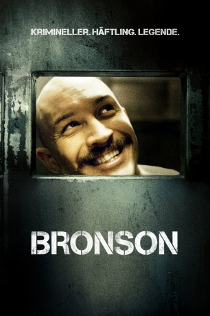

#3338 Bronson
 
 IMDB-Wertung: 7.1 / 10
IMDB-Wertung: 7.1 / 10  Metascore: 0
Metascore: 0 
Michael Peterson ist 22 Jahre alt, als er mit einer abgesägten Schrotflinte ein Postamt in Little Sutton überfällt. Seine Beute: knapp 27 Pfund und sieben Jahre Zuchthaus. Aufgrund verschiedenster Vorfälle innerhalb der Gefängnismauern – darunter Wärtermisshandlungen, Entführungen und Anstiftung zum Gefängnisaufstand – wird seine Strafe fortdauernd verlängert. Von den folgenden 35 Jahren Zuchthaus verbringt er 30 in Isolationshaft. Erst hier vollendet sich Petersons kompromisslose Persönlichkeit. Erst hier wird aus dem Problem-Teenager „Charles Bronson“, die lebende Legende: der gewalttätigste Sträfling Großbritanniens, der bis heute einsitzt.
Jahr: 2008
Dauer: 92 Minuten
FSK: 16
Land: England Studio: Kinowelt Home EntertainmentTonspuren: DTS - ,
Untertitel: Deutsch,
Auflösung: 1080p (1920x1040) Größe: 13312 MB
Genre: Action, Drama, Krimi, Biographie
Regisseur: Nicolas Winding Refn
Drehbuch: Anthony Peckham
Soundtrack:
Darsteller:
 Tom Hardy als Charles Bronson / Michael Peterson
Tom Hardy als Charles Bronson / Michael Peterson- Kelly Adams als Irene
 Luing Andrews als Hysterical Screw
Luing Andrews als Hysterical Screw- Katy Barker als Julie
- Andrew Forbes als Charlie's Dad
 Matt King als Paul Daniels
Matt King als Paul Daniels- James Lance als Phil
- Juliet Oldfield als Alison
 Jonny Phillips als Prison Governor
Jonny Phillips als Prison Governor Hugh Ross als Uncle Jack
Hugh Ross als Uncle Jack- Joe Tucker als John White
- Tracy Wiles als Jewellery Shop Assistant 1
- June Bladon als Prison Officer
- Bob Gale als Prison Officer / Screw
 Brendan McCoy als Con
Brendan McCoy als Con- Darren Edge als Nurse
 Neil Broome als Headmaster
Neil Broome als Headmaster- Gordon Brown als Screw
- Amanda Burton als Charlie's Mum
- Mark Devenport als Nurse 1
- Paul Donnelly als Screw
- Jon House als Webber
- Holly Lucas als Young Man
- Mark Powley als Andy Love / Friendly Screw
- Andrew St. John als Workshop Supervisor
- Mark Fish als Fish and Chips Shop Manager
- Kalron Scott Busuttil als Baby Charlie
- Raphael Cilla als Baby Michael
- Sam Cullingworth als Prison Officer
- Adryan Puicella als Prison Officer
- D. Keye als Prison Officer
- Peter D. Brammer als Prison Officer
- Lee Alvey als Prison Officer
- James McIntyne als Prison Officer
- Sebastian Rodgers als Prison Officer
- Rob Frost als Prison Officer
- Wez Smith als Prison Officer
- J.H. Bond als Prison Officer
- Simon Field als Prison Officer
- Peter Barry als Prison Officer
- Alexander Jablonskas als Prison Officr
- Roger Camden als Prison Officer
- David Clayton als Prison Officer
- Jason Whiteby als Prison Officer
- Bob Brookes als Prison Officer
- Anthony Oddy als Prison Officer
- J. Keye als Prison Officer
- Nick Stock als Prison Officer / Screw
- Alan Hefferon als Prison Officer
- David Jackson als Prison Officer
Datei: X:\2008(A-F)\Bronson (2008, FSK16, 1920x1040).mkv seit 15.03.2016
Festplatte: HD 2007(A-Z)-2008(A-F)
 Es gibt insgesamt 66 Filme in der Gruppe '2008(A-F)'
Es gibt insgesamt 66 Filme in der Gruppe '2008(A-F)'